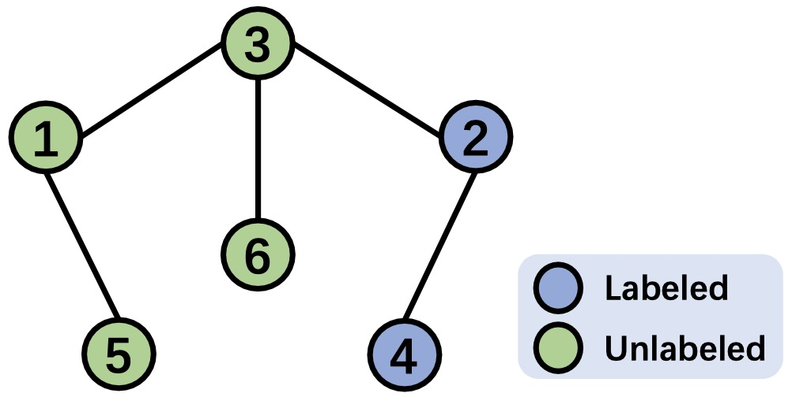
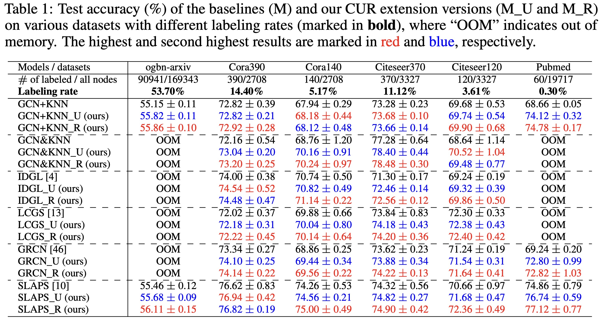
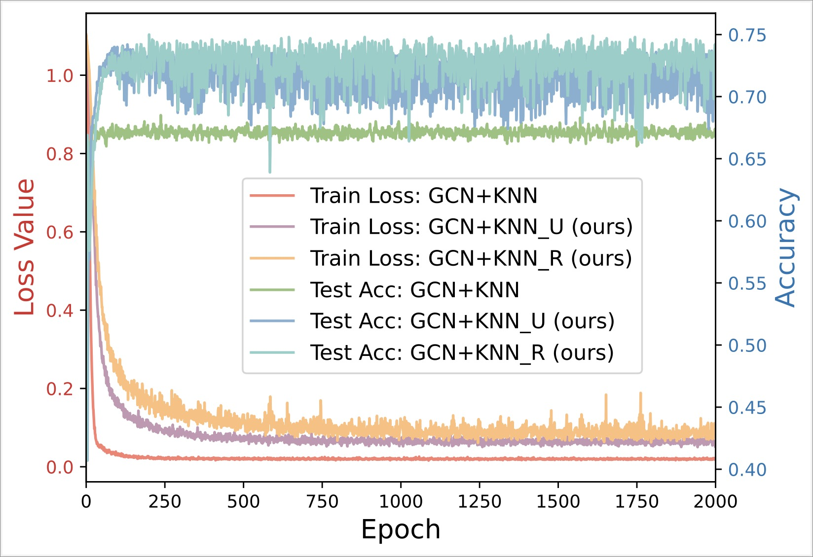
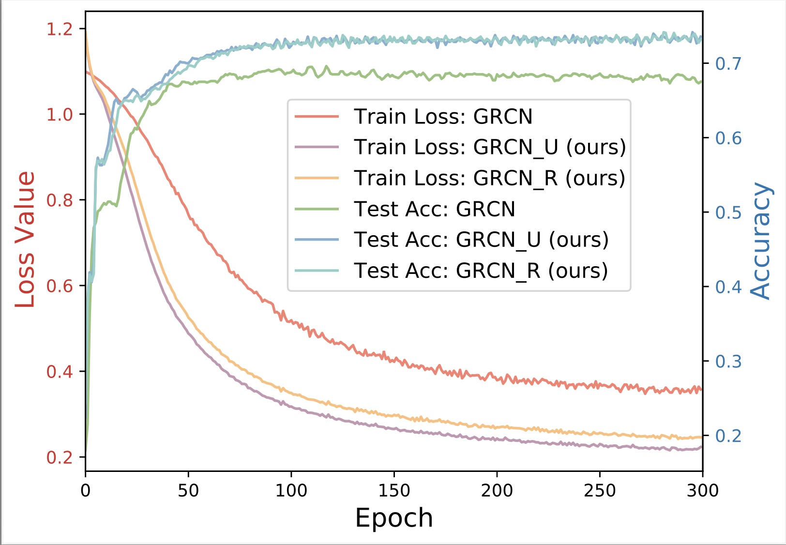
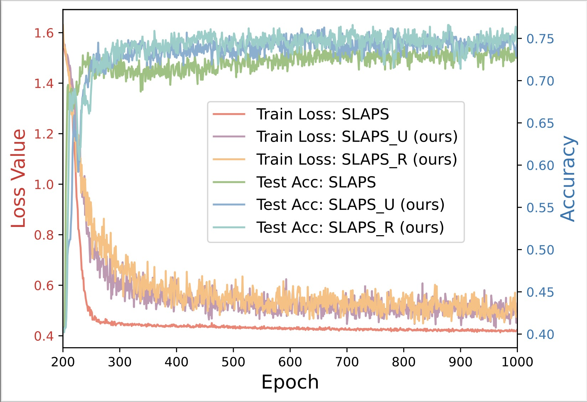

Existing GNNs typically require a prior graph to learn node representations, which poses a major challenge when encountering incomplete or even missing graphs. This limitation has spurred the development of latent graph inference (LGI), also known as graph structure learning. In general, LGI aims to jointly learn the underlying graph and discriminative node representations solely from the features of nodes. The following gives the definition of latent graph inference.
[Definition 1] (Latent Graph Inference) Given a graph $\mathcal{G}(\mathcal{V}, \mathbf{X} )$ containing $n$ nodes $\mathcal{V}=\{V_1, \ldots, V_n\}$ and a feature matrix $\mathbf{X} \in \mathbb{R}^{n\times d}$ with each row $\mathbf{X}_{i:} \in \mathbb{R}^d$ representing the $d$-dimensional attributes of node $V_i$, latent graph inference (LGI) aims to simultaneously learn the underlying graph topology encoded by an adjacency matrix $\mathbf{A} \in \mathbb{R}^{n\times n}$ and the discriminative $d'$-dimensional node representations $\mathbf{Z} \in \mathbb{R}^{n\times d'}$ based on $\mathbf{X}$, where the learned $\mathbf{A}$ and $\mathbf{Z}$ are jointly optimal for certain downstream tasks $\mathcal{T}$ given a specific loss function $\mathcal{L}$.
In this work, we adopt the most common settings from existing LGI literatures, considering $\mathcal{T}$ as the semi-supervised node classification task and $\mathcal{L}$ as the cross-entropy loss.
Let us consider a general LGI model $\mathcal{M}$ consisting of a latent graph generator $\mathcal{P}_{\mathbf{\Phi}}$ and a node encoder $\mathcal{F}_{\mathbf{\Theta}}$. For simplicity, we ignore the activation function and assume that $\mathcal{F}_{\mathbf{\Theta}}$ is implemented using a $1$-layer GNN, i.e., $\mathcal{F}_{\mathbf{\Theta}}=\mathtt{GNN}_1(\mathbf{X}, \mathbf{A}; \mathbf{\Theta})$, where $\mathbf{A}=\mathcal{P}_{\mathbf{\Phi}}(\mathbf{X})$. For each node $\mathbf{X}_{i:}$, the corresponding node representation $\mathbf{Z}_{i:}$ learned by the model $\mathcal{M}$ can be expressed as: \begin{equation} \mathbf{Z}_{i:} = \mathbf{A}_{i:}\mathbf{X}\mathbf{\Theta} = \left(\sum_{j \in \Omega} \mathbf{A}_{ij}\mathbf{X}_{j:} \right)\mathbf{\Theta}, \end{equation} where $\Omega=\{j\ |\ \mathbb{1}_{\mathbb{R}^+}(\mathbf{A})_{ij}=1 \}$ and $\mathbf{A}_{ij}=\mathcal{P}_{\mathbf{\Phi}}(\mathbf{X}_{i:}, \mathbf{X}_{j:})$. Consider the node classification loss: \begin{equation} \min_{\mathbf{A}, \mathbf{\Theta}} \mathcal{L} = \sum_{i\in \mathcal{Y}_{L}} \sum_{j=1}^{|\mathcal{C}|} \mathbf{Y}_{ij} \ln \mathbf{Z}_{ij} = \sum_{i\in \mathcal{Y}_{L}} \mathbf{Y}_{i:} \ln \mathbf{Z}_{i:}^{\top} = \sum_{i\in \mathcal{Y}_{L}} \mathbf{Y}_{i:} \ln \left( \left(\sum_{j \in \Omega} \mathbf{A}_{ij}\mathbf{X}_{j:} \right)\mathbf{\Theta}\right)^\top, \end{equation} where $\mathcal{Y}_{L}$ represents the set of indexes of labeled nodes and $|\mathcal{C}|$ denotes the size of label set.
We observe that, for $\forall i\in \mathcal{Y}_{L}$, $j \in \Omega$, $\mathbf{A}_{ij}$ is optimized via backpropagation under the supervision of label $\mathbf{Y}_{i:}$. For $\forall i \notin \mathcal{Y}_{L}$, however, if $j \notin \mathcal{Y}_{L}$ for $\forall j \in \Omega$, $\mathbf{A}_{ij}$ will receive no supervision from any label and, as a result, cannot be semantically optimal after training. Consequently, the learning models exhibit poor generalization as the predictions of testing nodes inevitably rely on these supervision-starved weights. This phenomenon is referred to as Supervision Starvation (SS), where many edge weights are learned without any label supervision.
We may ask why this problem arises? In fact, the SS problem is caused by a common and necessary post-processing operation known as graph sparsification, which is employed in the majority of LGI methods to generate a sparse latent graph. To be more specific, graph sparsification adjusts the initial dense graph to a sparse one through the following procedure: \begin{equation} \mathbf{A}_{ij}=\left\{ \begin{aligned} &\mathbf{A}_{ij}, & \text{if } \ \mathbf{A}_{ij} \in \operatorname{top-\kappa}(\mathbf{A}_{i:}) \\ & 0, & \text{otherwise}, \end{aligned} \right. \end{equation} where $\operatorname{top-\kappa}(\mathbf{A}_{i:})$ denotes the set of the top $\kappa$ values in $\mathbf{A}_{i:}$. After this sparsification operation, a significant number of edge weights are directly erased, including the crucial connections established between pivotal nodes and labeled nodes.
How many important nodes or connections suffer from this problem? We delve into this question in the next section.
To count how many nodes suffer from the supervision starvation problem, we first give the definition of the k-hop starved node:
[Definition 2] (k-hop Starved Node) Given a graph $\mathcal{G}(\mathcal{V}, \mathbf{X})$ consisting of $n$ nodes $\mathcal{V}=\{V_1, \ldots, V_n\}$ and the corresponding node features $\mathbf{X}$, for a $k$-layer graph neural network $\mathtt{GNN}_k(\mathbf{X}; \mathbf{\Theta)}$ with network parameters $\mathbf{\Theta}$, the unlabeled node $V_i$ is a k-hop starved node if, for $\forall \kappa \in \{1, \ldots, k\}$, $\forall V_j \in \mathcal{N}_\kappa(i)$, where $\mathcal{N}_\kappa(i)$ is the set of $\kappa$-hop neighbors of $V_i$, $V_j$ is unlabeled. Specifically, $0$-hop starved nodes are defined as the unlabeled nodes.
Note that k-hop starved nodes are defined based on the k-layer GNNs since a k-layer GNN can only aggregate signals from k-hop neighbors of nodes. In order to provide an intuitive perspective, we use two real-world graph datasets, Cora and Citeseer, as examples, and calculate the number of k-hop starved nodes based on their original graph topologies. The following picture shows the statistical results for k=1, 2, 3, 4, where the suffix number of datasets represents the number of labeled nodes.
After define the k-hop starved nodes, we show how to identify such nodes based on a given initial adjacency matrix. The following theorem gives a solution.
[Theorem 1] Given a sparse adjacency matrix $\mathbf{A} \in \mathbb{R}^{n\times n}$ with self-connections generated on graph $\mathcal{G}(\mathcal{V}, \mathbf{X})$ by a latent graph inference model with a $k$-layer graph neural network $\mathtt{GNN}_k(\mathbf{X}; \mathbf{\Theta)}$, the node $V_i$ is a $k$-hop starved node, if $\exists j \in \{1, \ldots, n\}$, such that $[\mathbb{1}_{\mathbb{R}^+}(\mathbf{A})]^k_{ij}=1$, and for $\forall j \in \{j\ |\ [\mathbb{1}_{\mathbb{R}^+}(\mathbf{A})]_{ij}=1 \cup [\mathbb{1}_{\mathbb{R}^+}(\mathbf{A})]^2_{ij}=1 \cup \ldots \cup [\mathbb{1}_{\mathbb{R}^+}(\mathbf{A})]^k_{ij}=1 \}$, $V_j$ is unlabeled.
To provide a clearer understanding, we present an example to illustrate the process of identifying $k$-hop starved nodes based on the given adjacency matrix. The following figure depicts a graph consisting of $6$ nodes, with $2$ labeled and $4$ unlabeled. The corresponding adjacency matrix is shown in the right, where all edge weights are set to $1$ for simplicity. To identify the $k$-hop starved nodes, we need to determine the $k$-hop neighbors for each node. The steps below demonstrate the identification process of $k$-hop neighbors based on the given adjacency matrix, where the $k$-hop neighbors for each node are listed at the end of each row of the corresponding matrices:
|  | \begin{equation} \qquad\quad \end{equation} | \begin{equation} \mathbf{A}: \begin{array}{lll} & \begin{array}{llllll}\ \ 1 & 2 & 3 & 4 & 5 & 6 \end{array} & \\ \begin{array}{l} 1 \\ 2 \\ 3 \\ 4 \\ 5 \\ 6 \end{array}& \left[\begin{array}{llllll} 1 & 0 & 1 & 0 & 1 & 0 \\ 0 & 1 & 1 & 1 & 0 & 0 \\ 1 & 1 & 1 & 0 & 0 & 1 \\ 0 & 1 & 0 & 1 & 0 & 0 \\ 1 & 0 & 0 & 0 & 1 & 0 \\ 0 & 0 & 1 & 0 & 0 & 1 \\ \end{array}\right] \begin{array}{l} \end{array} \end{array} \nonumber \end{equation} |
|  |
|  |  |  |